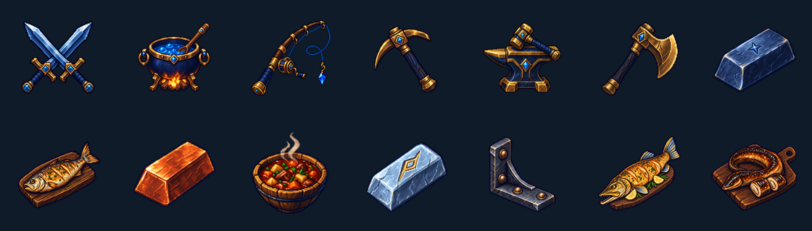

VELDRYN — Visual Polish v4
Implemented native UI improvements, 14 new illustrations and a verified Android review. These captures show real React Native components with memory fixtures; the QA strip is development-only.
Implementation report · Asset specification · Native QA scope
New art

60 runtime PNGs with density variants, 14 transparent masters. All 402 recipe outputs resolve to art. Twenty uncommon ingredients still use neutral markers.
Native Android captures
Production Metro export and TypeScript checks passed. Physical-device/iOS checks and live account/server interactions were not part of this review. Refer to the QA report for exact tested dimensions and limitations.